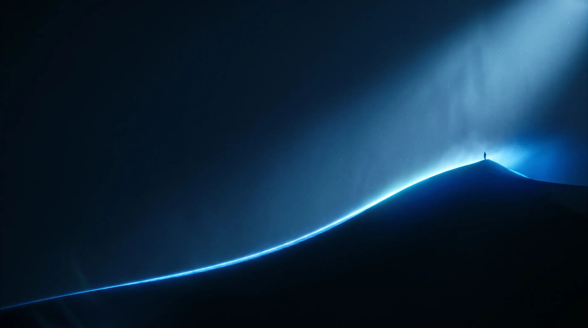

Product Designer · Builder · Explorer
Designing products that scale, convert & connect through first principles and
obsessive detail to craft.
If this is not comfortable to read, the grade is wrong — not the copy.
Copied